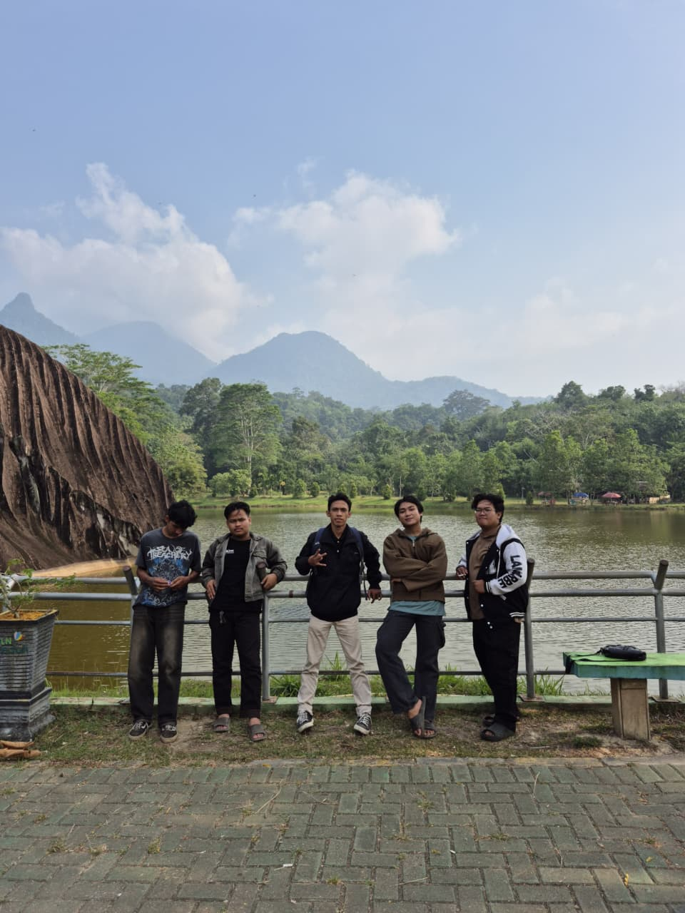

Kegiatan Phasacola
 |
Kegiatan Liburan Bersama Teman Foto di tempat wisata batu belimbing Singkawang. Batu Belimbing Singkawang adalah destinasi alam unik di Kalimantan Barat, menampilkan batu granit raksasa berbentuk menyerupai buah belimbing dengan pemandangan danau dan hutan yang menenangkan. |
| Kembali ke Halaman Utama |